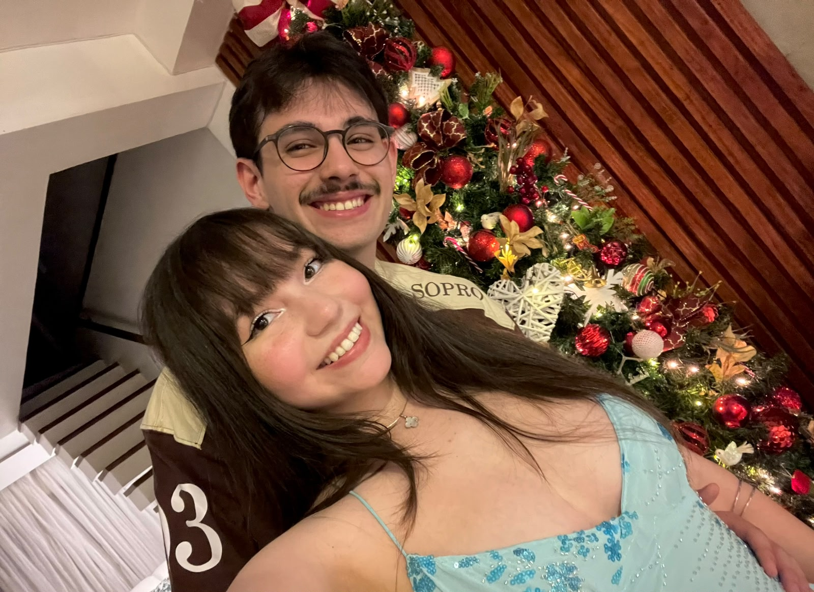
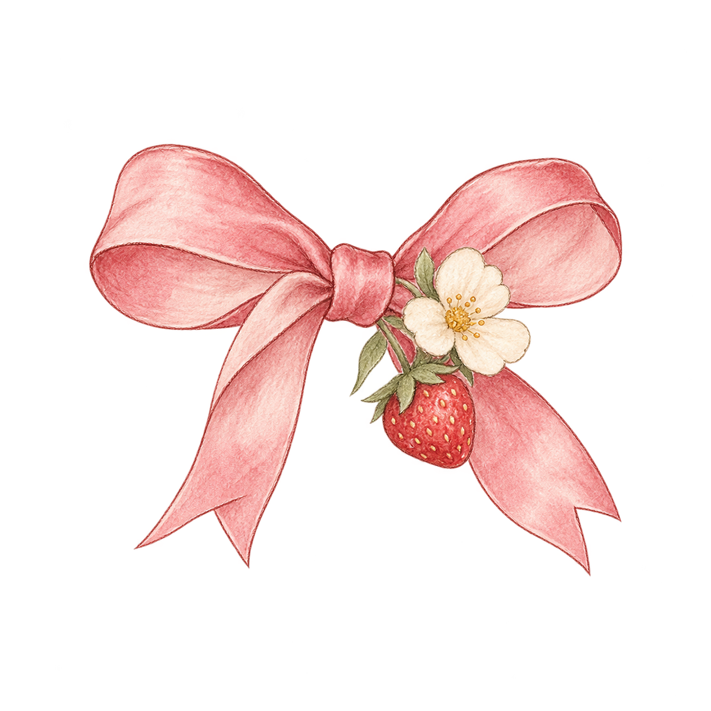
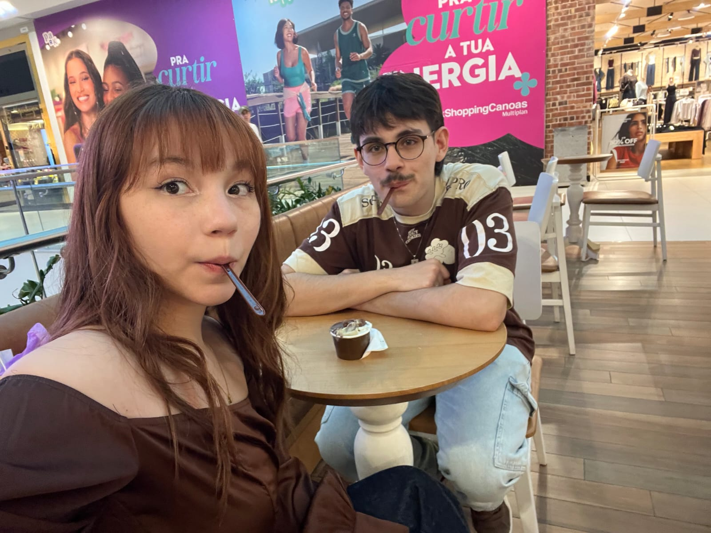
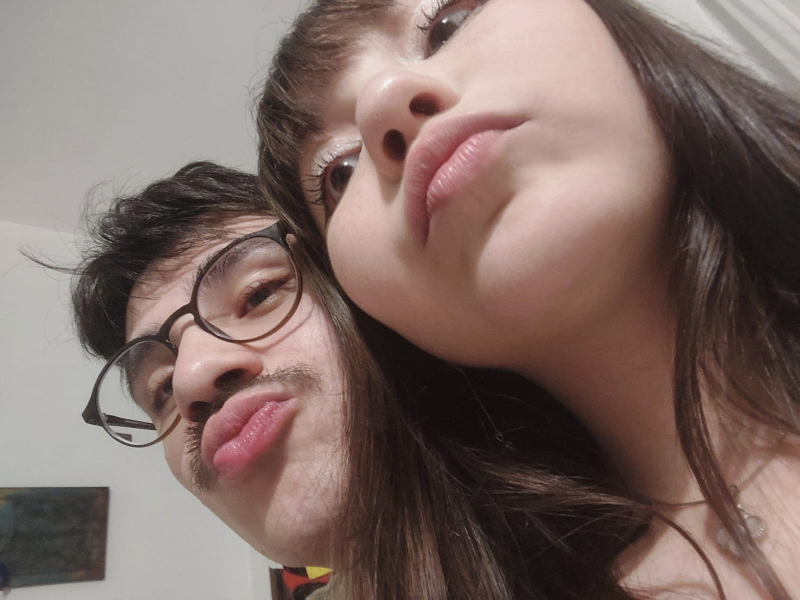
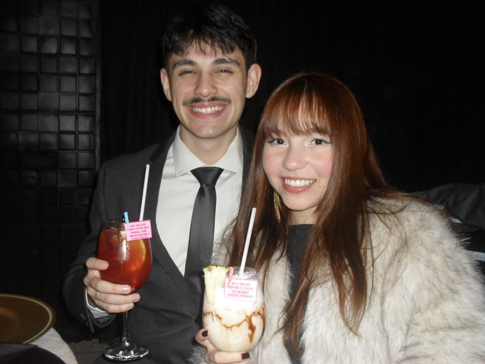
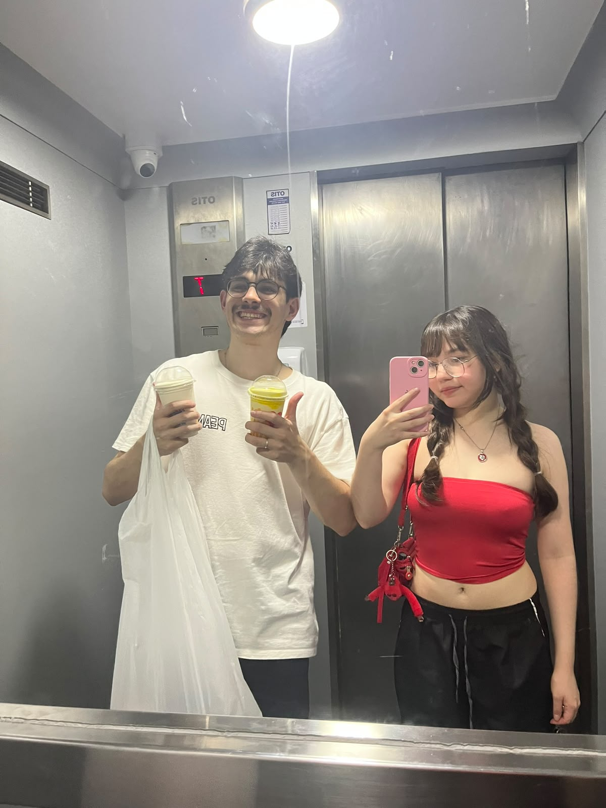
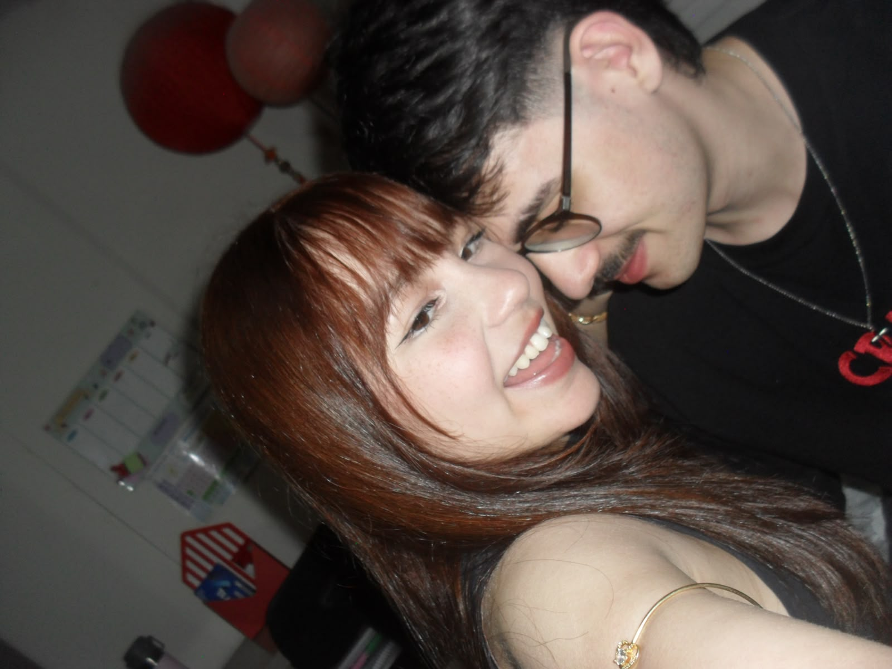

Primeiro encontro
Eu ainda não imaginava o quão importante seria aquele dia para mim...
NOSSO PRIMEIRO ANO
Uma pequena coleção de tudo que fez
esse ano ser tão especial.
guardei um pouquinho da gente aqui.


para guardar
01 / A PRIMEIRA PÁGINA
Lembro do dia em que te vi pela primeira vez. Você descendo aquelas escadas do teu prédio, eu nervoso para te ver. E quando eu vi aquela mulher linda, toda de branco, parecendo um anjo, eu só conseguia sorrir.
Às vezes, o que muda a nossa vida começa assim:
sem a gente saber o quanto vai ser bonito.
02 / UM MOMENTO DE CADA VEZ
Pequenos instantes. Um lugar enorme no meu coração.
Eu ainda não imaginava o quão importante seria aquele dia para mim...
Trinta dias descobrindo que eu queria dividir muito mais dias com você.
O destino era só um detalhe, o que fariamos não me importava tanto. O que realmente importava era estar contigo naquele momento...
Mesmo dias comuns se tornam especiais quando eu consigo te ver, nem que seja por frações de segundos.
Nosso primeiro Natal juntos foi perfeito. Passar essa data contigo, para mim, foi muito especial. Eu amo as fotos que tiramos nesse dia.
Mesmo que para mim todos os dias são especiais ao teu lado, ainda assim, cada momento com você é único e precioso.
13/09
Olho para trás com tanto carinho. E ao mesmo tempo olho para frente com a vontade de te ter para o resto da vida.
a linha continua. ainda temos tanto pra viver... ♡
03 / RETALHOS DA GENTE
As bonitas. As espontâneas. As que só a gente entende.



04 / APERTA O PLAY NA SAUDADE
Porque uma foto não guarda o som da sua risada.
um pedacinho da gente
adicione video01.mp4essa risada que eu amo
adicione video02.mp4para sentir tudo outra vez
adicione video03.mp405 / SE EU FOSSE FAZER UMA LISTA...
Faltaria papel. Mas aqui vão algumas.
Seu sorriso, seus olhos e bochechas, a ponta da sua orelha que corta o cabelo.
O jeito que você fala, escuta, conversa, e me entende...
quando falamos nada com nada, ou só quando não fazemos nada. Amo fazer nada contigo
Nossos gostos contraditórios em vários sentidos, são parte do que fazem eu me apaixonar por você.
Seu abraço que é tão reconfortante para mim...
O jeito que a gente ri juntos, me divirto muito contigo.
Seu peito, sua pele, seu corpo, seus lábios carnudos que amo beijar...
O jeito que você me faz eu me sentir bem, me sentir seguro, me sentir AMADO.
06 / OLHA TUDO O QUE A GENTE VIVEU
12 meses.
52 semanas.
365 dias.
E milhares de pequenos momentos
que eu guardaria de novo.

07 / O QUE EU QUERIA TE DIZER
Oie Isadora Lopes Melo, meu amor... meu grande amor, o amor da minha vida. Eu não tenho palavras para descrever o quanto você significa para mim e o que eu sinto em estar com você. É uma sensação tão única que só você me faz sentir. é tão leve, tão gostoso que me vicia. Te amar me vicia, o seu amor me vicia. O teu toque, os teus beijos, a tua voz... As nossas conversas, nossas risadas, nossos passeios de mão dada pelas calçadas. São tantas coisas que me fazem te amar que uma carta ficaria pouca para explicar, ainda mais que esse site me limitou a poucas linhas kkkkk. Mas nem se preocupa que tudo o que eu gostaria de dizer por meio dessa carta, vou te dizer pessoalmente... Te amo Isadora Lopes Mééééélo
Com amor,
Murillo ♡
08 / TEM MÚSICA QUE É ABRAÇO
Algumas músicas sempre
vão ter um pouquinho de nós.
Uma canção para cada pedacinho da gente.
Adicione o link da nossa playlist em script.jsO play fica por sua conta. O carinho, por minha.
ESSA FOI SÓ A PRIMEIRA CAIXINHA.
Nosso primeiro ano termina aqui...
Feliz 1 ano para nós. ♡
guardar tudo de novo